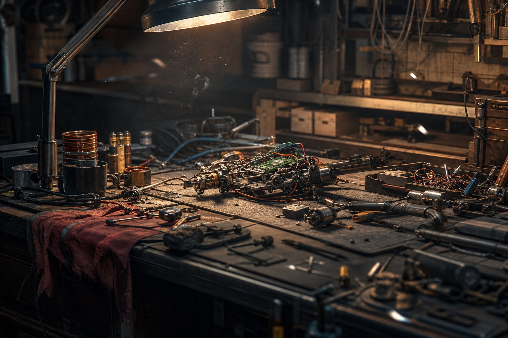

Le Workbench, mode d'emploi
Le Workbench de ta Trophy Room transforme des matériaux looteés en produits finis : munitions, armures, casques, items tactiques, fragments de collection. Chaque formule consomme des matériaux sur un timer — et depuis la Saison 7, il est devenu le système de progression horizontal le plus sous-estimé du jeu.
- Matériaux : looteés en raid, achetés au marché, ou issus des misc items (montres de poche, journaux d'ouvriers, analyseurs de gaz… → désormais craftables en munitions !).
- Produits : gardés, utilisés, ou vendus — le craft est une usine à marge si matériau < produit.
- Vérifier l'usage (S7) : clic droit sur un item en stockage → les contacts qui l'achètent + les formules qui l'utilisent. Compare les prix avant de vendre n'importe comment.
Les changements majeurs de la S7
- ✅ Les formules sont au niveau maximum dès l'unlock — plus besoin d'upgrader le bench pour les améliorer.
- ✅ Matériaux rééquilibrés à la baisse sur de nombreuses formules.
- ✅ Nouveaux usages des misc items : la pacotille devient de la monnaie de craft.
- ✅ Nouvel item craftable : la grenade tactique M290 stun.
- 🆕 Mode Recherche d'amélioration : blueprints → research → buffs uniques pour la saison.
- 🆕 Partage d'amis : étudier les formules de la Trophy Room d'un ami.

La Recherche d'amélioration, pas à pas
- Loote des Blueprints d'amélioration (Improved Manufacturing Blueprint) : plus fréquents dans les boîtes à documents, les vestes et les tiroirs, et en récompense de missions actives.
- Ouvre la Trophy Room → Workbench, sélectionne la formule ciblée, clique « Recherche d'amélioration ». Le coût en blueprints dépend de la formule (le résultat Research Expert réduit de 10 % le coût, par ex.).
- Tu reçois plusieurs résultats candidats aléatoires — tu dois en choisir 2 max pour équiper les deux slots de la formule.
- ⚠️ Les résultats non sélectionnés sont perdus, et quitter la fenêtre avant confirmation détruit les nouveaux résultats. Choisis calmement.
- Le 2e slot doit d'abord être débloqué. Tu peux re-rechercher la même formule autant que tu veux.
- Les buffs sont actifs jusqu'à la fin de la saison — réinitialisés à la suivante (les formules restent).
Comprendre les résultats & le Research Score
Chaque résultat porte un nom et un score ; le Season Improvement Research Score d'une formule = somme des scores de ses 2 résultats équipés. Exemples de résultats (datamining communautaire) :
| Résultat | Score | Effet (exemples) |
|---|---|---|
| Fast Track I | 30 | Réduction du temps de craft |
| Tactical Synergy II | 40 | Bonus de sortie (ex. +20× sur certaines munitions) |
| Scrap Recovery III | 60 | Chance de récupérer des matériaux |
| Unexpected Surplus IV | 94 | Jusqu'à 30 % de chance de rembourser tous les coûts du craft |
| First-Rate Provisions | — | Chance d'upgrader un casque SH65 en casque IND70 (rapport MoreFun) |
Le datamining communautaire recense 25 formules recherchables et ~721 résultats possibles (non officiel) — d'où la sensation d'aléatoire. Un même nom de résultat donne des effets différents selon la formule.
Stratégie : quoi rechercher, dans quel ordre
🧠 La règle « une seule formule »
Répartir 10 blueprints sur 5 formules = 5 sets de résultats bleus. Concentrer-les sur UNE formule = tu fonces vers les garantis or/rouge. Priorité à la formule que tu craft le plus souvent : les buffs ne déclenchent qu'au moment du craft.- Cheap & fast : .45 or, Dragon's Breath — le retour sur investissement est rapide (idéal pour comprendre le système).
- High volume : munitions T4/T5 — demande perpétuelle sous les caps S7 (chaque round crafté = argent économisé).
- High ticket : IND70, BT201, SH65 — un Unexpected Surplus IV (30 %) sur un IND70 à ~1,78M économise ~535 000 Koens par craft en moyenne (source : analyse S7).
- Vérifie les caps AVANT : une formule .338 AP (pénétration 6) est inutile en Normal/Lockdown (interdite) — ne gaspille pas de slot d'équip de recherche là-dessus sauf usage Forbidden.
Crafts rentables — la checklist
- Prix marché du produit (après taxe de vente).
- Prix marché de la somme des matériaux.
- Si matériau < produit → marge. Ajoute les probos de buff (remboursement, sortie bonus) pour le EV réel.
- Empile les produits ×5 pour la vente (règle des slots).
- Exemples rapportés : armure Spartan T5 (~90k → 180k), pièces de sniper, casques audio, optiques, munitions T4/T5.
Partage entre amis (nouveau S7)
- Visite la Trophy Room d'un ami (icône amis) → ouvre son Workbench → étudie une formule disponible.
- Tu reçois une formule test utilisable sur ton propre workbench (on ne produit jamais sur la bench de l'autre).
- L'ami reçoit en retour des blueprints assistance, utilisés en priorité lors de ses recherches.
- Usage optimal : un groupe qui débloque des formules différentes et les mutualise — la coverage de l'équipe explose.
Crafts d'événements (Fonderie)
La fonderie (Smelter) de raid est le workbench temporaire des événements :
- Trash to Treasure : formule de conversion de loot (ex. PDA + Data Cable + Laptop → Prototype Calculation Module) — fenêtres limitées (ex. 29 oct. → 15 nov. 2026 pour Halloween).
- Lunar Soil Sample : desk clock + pocket watch + fragments Gungnir → collectible Phaethon's Clock (haute valeur).
- Règle S7 : la fonderie n'accepte que les ressources natives de la raid — plus d'import de l'extérieur.
- Les consommables inutilisés d'événements (passes) se convertissent en Koens en fin d'événement (ex. 1 passe = 5 000).
Checklist d'optimisation du bench
- ☐ Toujours une formule « staple » en recherche (munitions T4/T5 ou ton armor du moment).
- ☐ Vérifier Vérifier l'usage avant de vendre un misc item.
- ☐ Garder un stock de matériaux de barter séparé des matériaux de craft.
- ☐ Craft pendant les timers longs IRL — la bench travaille pendant que tu bosses.
- ☐ Recycler les produits non utilisés en cash ×5 plutôt que de laisser pourrir le stockage.
- ☐ Aux changements de saison : réinitialise ta stratégie de recherche (les buffs tombent, les blueprints restent valables).
🧟 Circuit zombie
En Infected Zone, les sacs d'échantillons bio et Flesh Growths (drop No Man's Land pass) nourrissent autant ton Zombie Research que ton cash : intègre leur valeur dans tes runs avant de décider d'un fight ou d'un exfil rapide.FAQ craft
Deux maximum (les deux slots de la formule, le 2e à débloquer d'abord). Tout résultat non choisi est perdu — et sortir de la fenêtre sans confirmer détruit aussi les nouveaux tirages.
Non — réinitialisation à chaque saison. Les blueprints, les formules débloquées et leurs niveaux max, eux, sont conservés.
Les boîtes à documents, vestes et tiroirs sont les gisements principaux selon MoreFun — plus les récompenses de missions actives. Les raids avec forte densité de bureaux (TV Station, bureaux de Farm/Northridge) sont naturellement productives.
Sources — Patch notes officielles S7 MoreFun/Steam (Workbench Improvement Research) · timesaver.gg workbench guide (24/10/2026) · distruct.info wiki blueprints · topuplive S7 · X @ArenaBreakoutPC (24/09/2026). Vérifié le 17 novembre 2026.